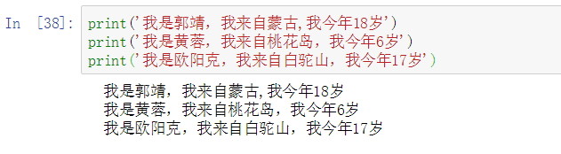
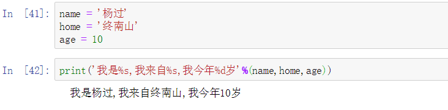
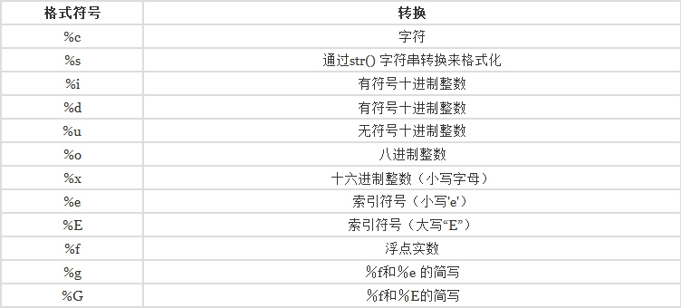
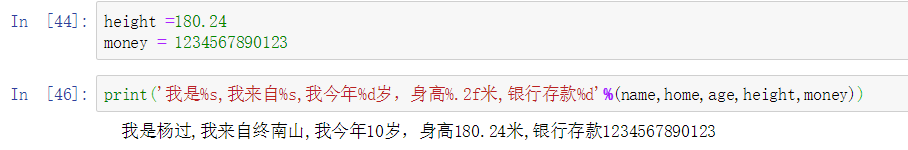
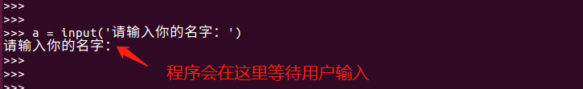
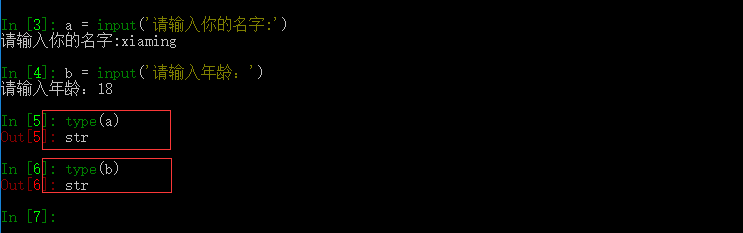

1.9输入和输出
1、输出
变量内容的输出: print('hello world')
2、格式化输出
来看下下面这三句代码的输出有什么特点，好像只有一个名字不同。‘我来自一班’三个人都是一致的，有没有办法简化下代码呢？

要简化，那么我们就用到了字符串格式化。
3、什么是字符串格式化呢？
python 有一个简单的字符串格式化方法，使用%做占位符。%后面跟的是变量的类型。

4、常用的格式化符号，其中最常用的 %s,%d,%f。


5. str.format()
Python 2.6 中引入了 str.format() 格式化方法
str.format() 是对 %格式化 的改进，它使用普通函数调用语法，并且可以通过 __format__() 方法为对象进行扩展。
使用 str.format() 时，替换字段用大括号进行标记：
>>>'我是{},我来自{},我今年{}岁'.format(name,home,age)
'我是杨过,我来自终南山,我今年10岁'
并且可以通过索引来以其他顺序引用变量：
>>> '我是{2},我来自{0},我今年{1}岁'.format(home,age,name)
'我是杨过,我来自终南山,我今年10岁'
或者可以这样：
>>> '我是{name},我来自{home},我今年{age}岁'.format(home=home,age=age,name=name)
'我是杨过,我来自终南山,我今年10岁'
从字典中读取数据时还可以使用 **：
>>> person = {"name":"郭靖","age":18}
>>> '我是{name}，我今年{age}岁'.format(**person)
'我是郭靖，我今年18岁'
确实，str.format() 比 %格式化高级了一些，但是它还是有自己的缺陷。
在处理多个参数和更长的字符串时仍然可能非常冗长，麻烦！看看这个：
>>> '我是{},我来自{},我今年{}岁，身高{}米,银行存款{}'.format(name,home,age,height,money)
'我是杨过,我来自终南山,我今年10岁，身高180.24米,银行存款1234567890123'
6.f-strings
python3.6新增了f-Strings方法，它可以使得字符串格式化更加容易。
f-strings 是指以 f 或 F 开头的字符串，其中以 {} 包含的表达式会进行值替换。
f-Strings 使用方法
>>> name = '杨过'
>>> age = 18
>>> f'我是{name},我今年{18}岁'
'我是杨过,我今年18岁'
>>> F'我是{name},我今年{18}岁'
'我是杨过,我今年18岁'
因为 f-strings 是在运行时计算的，那么这就意味着你可以在其中放置任意合法的 Python 表达式，比如：
- 运算表达式
>>> f"{ 2 * 3 + 1}"
'7'
详细方法请参考f-string用法
>>> f'我是{name},我来自{home},我今年{age}岁，身高{height:.1f}米,银行存款{money:,}'
'我是杨过,我来自终南山,我今年10岁，身高180.2米,银行存款1,234,567,890,123'
7、python 输入
python中提供了input 方法来获取键盘输入。

注意：input接收的键盘输入结果都是str类型的，如果接收数字类型需要将将str转成int
